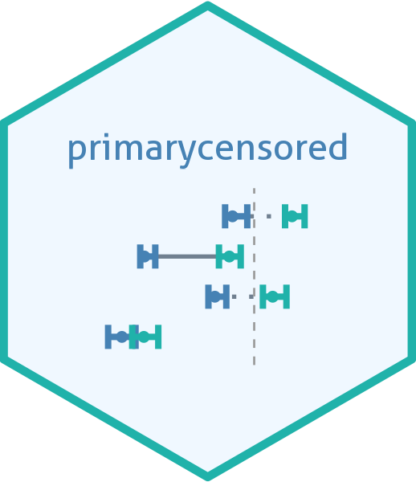

Method for a normal delay with a truncated Gumbel primary
Source:R/pcens_cdf_gumbel.R
pcens_cdf_gumbel.RdAnalytical primary event censored CDF for a normal delay distribution with
a truncated Gumbel primary event window, the dtgumbel() primary
distribution. It honours use_numeric, and uses a numerical method where
the series below is not accurate.
Usage
# S3 method for class 'pcens_pnorm_dtgumbel'
pcens_cdf(object, q, pwindow, use_numeric = FALSE)Arguments
- object
A
primarycensoredobject as created bynew_pcens().- q
Vector of quantiles
- pwindow
Primary event window. Use
pwindow = 0for an exactly observed primary event, in which case the delay CDF is used directly.- use_numeric
Logical, if TRUE forces use of numeric integration even for distributions with analytical solutions. This is primarily useful for testing purposes or for settings where the analytical solution breaks down.
Details
Write \(G(z) = \exp[-\exp\{-(z - \mu) / \beta\}]\) and
\(D = G(w) - G(0)\) for a window of width \(w\), and let \(F\) be
the delay CDF and \(T_f(\xi; \tau)\) the transform of pcens_cdf_exptilt.
With \(c(q) = \exp\{-(q - \mu) / \beta\}\) the reversed window
\(G(q - u) = \exp\{-c(q) e^{u / \beta}\}\) is a power series in
\(e^{u / \beta}\), which gives
$$
F_G(q) = F(q - w) + \frac{1}{D} \Big[
(1 - G(0)) \{F(q) - F(q - w)\} +
\sum_{n \ge 1} \frac{\{-c(q)\}^n}{n!} \Delta_n(q) \Big],
$$
with \(\Delta_n(q) = T_f(n / \beta; q) - T_f(n / \beta; q - w)\).
The transforms at each endpoint are evaluated once at every tilt and reused
when several q share an endpoint.
Each \(\Delta_n\) is taken between the lower or the upper tail
transforms, whichever loses less precision, as for pcens_cdf_exptilt.
The terms alternate and are bounded by \(s_0^n / n!\) times the delay mass in the window, where \(s_0 = e^{\mu / \beta}\). They are summed on the log scale with the odd and even terms separate. The series is truncated where the bound is below 1e-18.
Fallback to the numerical method. The relative error of the series is
estimated for each q.
Where it is above 1e-8 the numerical method is used for that q.
The numerical method is used for every q where \(\mu / \beta\) is
above log(15) or where the window is narrow relative to \(\beta\).
Numerical method. The window density is a spike of width about
\(\beta\) when \(\mu / \beta\) is large, which the integration of
pcens_cdf.default() can miss.
So pcens_cdf.default() integrates this primary in a variable in which
the integrand is smooth, over the range that holds the mass of the window.
This applies to any delay with this primary.
See also
Low level primary event censored distribution objects and methods
new_pcens(),
pcens_cdf(),
pcens_cdf.default(),
pcens_cdf.pcens_pdiscretehazard(),
pcens_cdf.pcens_pdiscretestep(),
pcens_cdf.pcens_pgamma_dunif(),
pcens_cdf.pcens_pgengamma.orig_dunif(),
pcens_cdf.pcens_pgengamma_dunif(),
pcens_cdf.pcens_plnorm_dunif(),
pcens_cdf.pcens_pweibull_dunif(),
pcens_cdf_exptilt,
pcens_cdf_tlogis,
pcens_pmf(),
pcens_pmf.default(),
pcens_quantile(),
pcens_quantile.default(),
update.pcens()